Kaggle
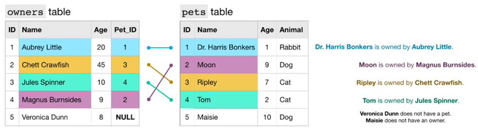We can use an INNER JOIN to pull rows from both tables where the value in the Pet_ID column in the owners table has a match in the ID column of the pets table (Veronica Dunn and Maisie are not included in the results):
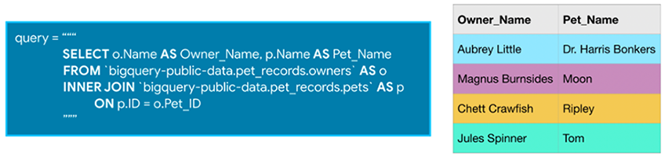Replacing INNER JOIN in the query above with LEFT JOIN returns all rows where the two tables have matching entries, along with all of the rows in the left table (whether there is a match or not). If we instead use a RIGHT JOIN, we get the matching rows, along with all rows in the right table (whether there is a match or not). ("left" refers to the table that appears before the JOIN in the query, "right" refers to the table that is after the JOIN)
A FULL JOIN returns all rows from both tables. Note that in general, any row that does not have a match in both tables will have NULL entries for the missing values.
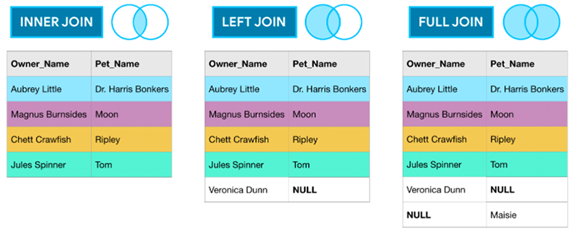As you've seen, JOINs horizontally combine results from different tables. If you instead would like to vertically concatenate columns, you can do so with a UNION. Note that with a UNION, the data types of both columns must be the same, but the column names can be different.
We use UNION ALL to include duplicate values - you'll notice that 9 appears in both the owners table and the pets table, and shows up twice in the concatenated results. If you'd like to drop duplicate values, you need only change UNION ALL in the query to UNION DISTINCT.
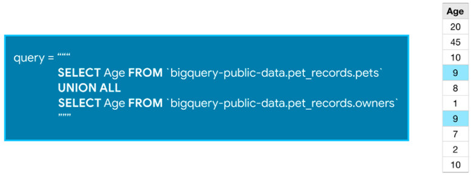We can use two different JOINs to link together information from all three tables, in a single query:
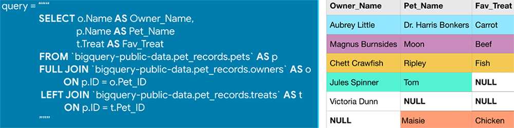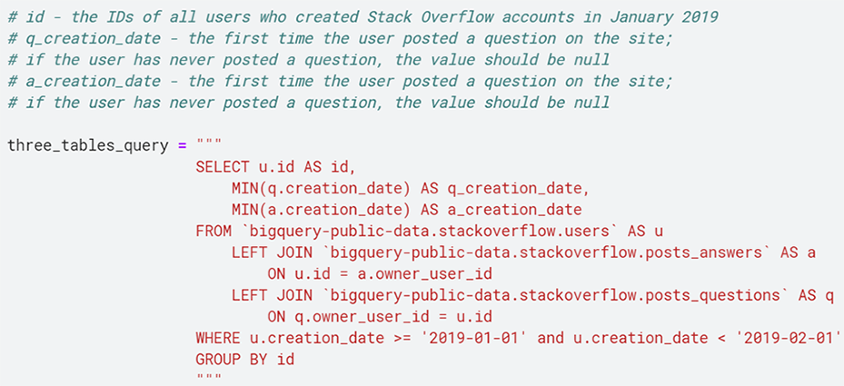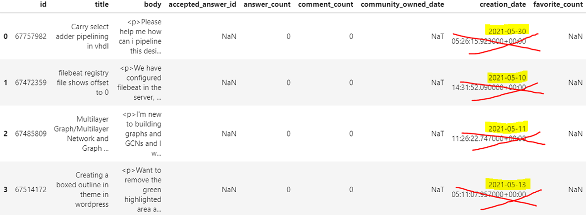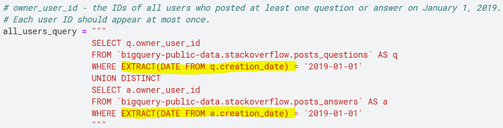To calculate a moving average of the training times for each runner, where we always take the average of the current and previous training sessions:
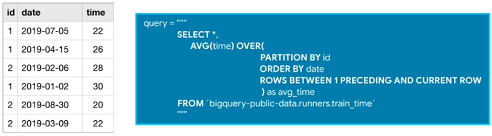All analytic functions have an OVER clause, which defines the sets of rows used in each calculation. The OVER clause has three (optional) parts:
There are many ways to write window frame clauses:
Analytic aggregate functions:
As you might recall, AVG() (from the example above) is an aggregate function. The OVER clause is what ensures that it's treated as an analytic (aggregate) function. Aggregate functions take all of the values within the window as input and return a single value.
Analytic navigation functions:
Navigation functions assign a value based on the value in a (usually) different row than the current row.
Analytic numbering functions:
Numbering functions assign integer values to each row based on the ordering.
The query uses a common table expression (CTE) to first calculate the daily number of trips. Then, we use SUM() as an aggregate function. Since there is no PARTITION BY clause, the entire table is treated as a single partition. The ORDER BY clause orders the rows by date, where earlier dates appear first. By setting the window frame clause to ROWS BETWEEN UNBOUNDED PRECEDING AND CURRENT ROW, we ensure that all rows up to and including the current date are used to calculate the (cumulative) sum.
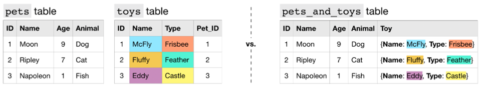In this case, all of the information from the toys table is collapsed into a single column (the "Toy" column in the pets_and_toys table). We refer to the "Toy" column in the pets_and_toys table as a nested column, and say that the "Name" and "Type" fields are nested inside of it.
Nested columns have type STRUCT (or type RECORD):
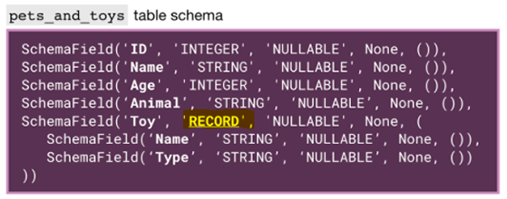To query a column with nested data, we need to identify each field in the context of the column that contains it:
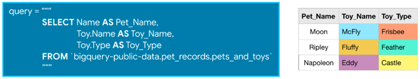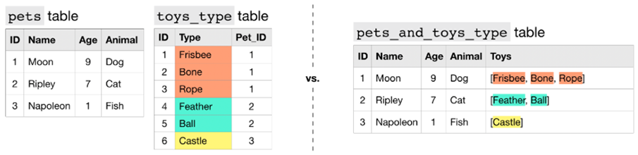We say that the "Toys" column contains repeated data, because it permits more than one value for each row.
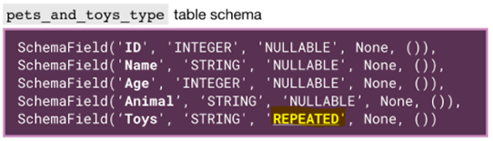Each entry in a repeated field is an ARRAY, or an ordered list of (zero or more) values with the same datatype.
When querying repeated data, we need to put the name of the column containing the repeated data inside an UNNEST() function. This essentially flattens the repeated data (which is then appended to the right side of the table) so that we have one element on each row:
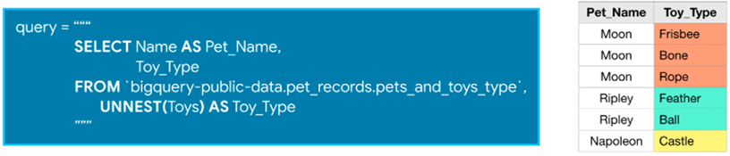Now, what if pets can have multiple toys, and we'd like to keep track of both the name and type of each toy?
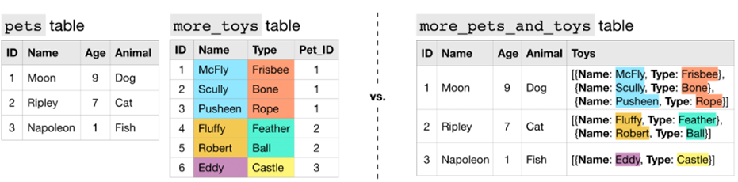In the more_pets_and_toys table above, "Name" and "Type" are both fields contained within the "Toys" STRUCT, and each entry in both "Toys.Name" and "Toys.Type" is an ARRAY:
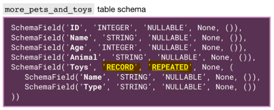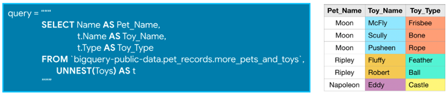Since the "Toys" column is repeated, we flatten it with the UNNEST() function. And, since we give the flattened column an alias of t, we can refer to the "Name" and "Type" fields in the "Toys" column as t.Name and t.Type, respectively.
show_amount_of_data_scanned() shows the amount of data the query uses.
show_time_to_run() prints how long it takes for the query to execute.
Writing efficient queries: